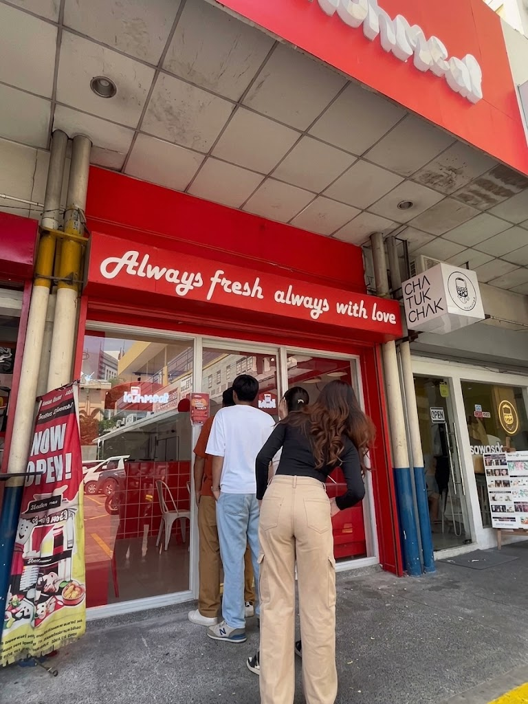
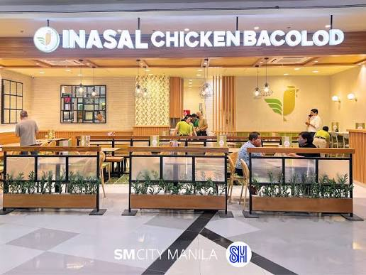

Kuh Meal Kalaw
Parkview Plaza, Kalaw, Manila. Open Mon–Sat 9:00 AM–9:00 PM, Sun 11:30 AM–8:30 PM.
Budget-friendly meals just steps from campus — solid go-to for a quick lunch between classes..

Your guide to the best eats in and around TUP Manila.
BTVTED-COMPRO 2A student at TUP Manila, on a mission to find the best foods near campus.

Parkview Plaza, Kalaw, Manila. Open Mon–Sat 9:00 AM–9:00 PM, Sun 11:30 AM–8:30 PM.
Budget-friendly meals just steps from campus — solid go-to for a quick lunch between classes..

720 Mercedes Street, Ermita, Manila — just behind San Marcelino St., close to Adamson University High School and an easy walk from TUP Manila.
Sizzling sisig done right — crispy, flavorful, and pairs perfectly with a cold drink after a long day with many variety of foods to choose.

SM City Manila, Low Ground, Main Building.
Brings the flavors of Bacolod-style chicken inasal to campus — smoky grilled chicken with garlic rice, filling and easy to share.
